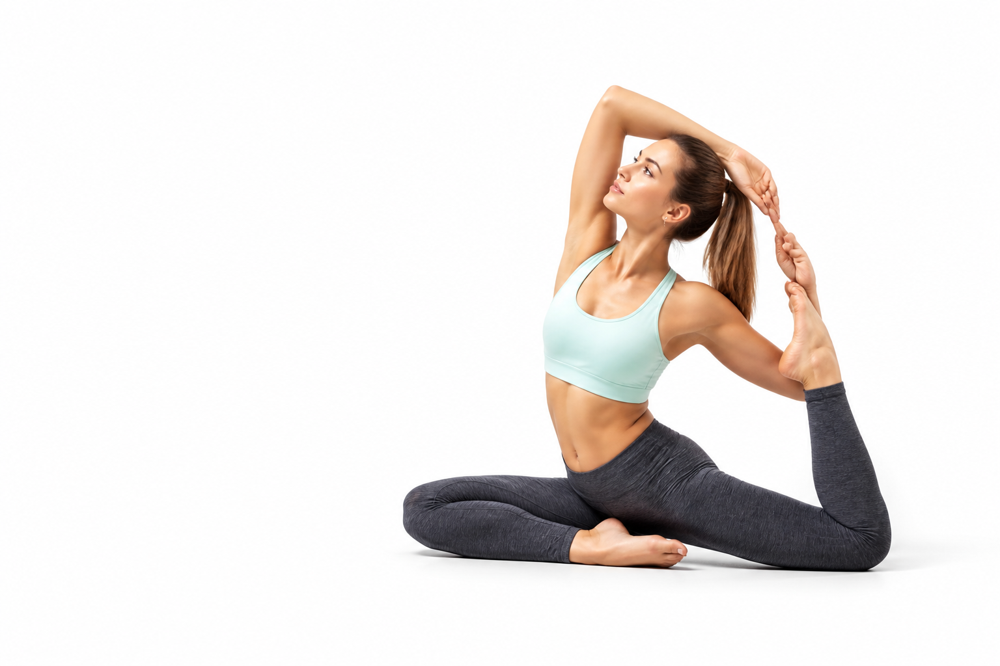

YOGA
EntspannungEin tiefer Atemzug.
Ein neuer Anfang.
Deine Matte. Dein Moment.
Raum für dich.
Du musst nicht
weiter kommen.
Nur bei dir ankommen.
Yoga ist kein Wettbewerb. Es ist eine Einladung, deinem Körper zuzuhören, deinen Atem wahrzunehmen und deinen eigenen Rhythmus zu finden.
Entdecke deine Praxis ↗Finde deinen Flow.
Mal kraftvoll. Mal ganz sanft.
Immer so, wie es dir heute guttut.
Dein erster Schritt
beginnt mit
einem Atemzug.
Du brauchst keine perfekte Haltung und keine besondere Ausrüstung. Ein ruhiger Platz, bequeme Kleidung und ein wenig Zeit für dich reichen für den Anfang.
NIMM DIR EINE AUSZEIT ↗Kleine Schritte sind auch Schritte.Die Welt darf warten.
Du darfst durchatmen.
Setz dich bequem hin. Lass die Schultern sinken.
Folge für einen Moment deinem natürlichen Atem.
Platz für
deine Fragen.
Muss ich schon Yoga können?+
Nein. Beginne mit einer ruhigen Praxis und wähle Bewegungen, die sich für dich angenehm anfühlen. Bei Unsicherheit kann dich eine qualifizierte Lehrperson begleiten.
Was brauche ich für meine Praxis?+
Bequeme Kleidung und einen ruhigen Platz. Für Bewegungen am Boden ist eine rutschfeste Yogamatte hilfreich; für die kurze Atempause genügt ein bequemer Sitz.
Wie funktioniert die kleine Auszeit?+
Starte den Timer, setz dich bequem hin und atme in deinem eigenen Rhythmus. Nach einer Minute endet der Timer automatisch. Du kannst ihn jederzeit pausieren oder zurücksetzen.